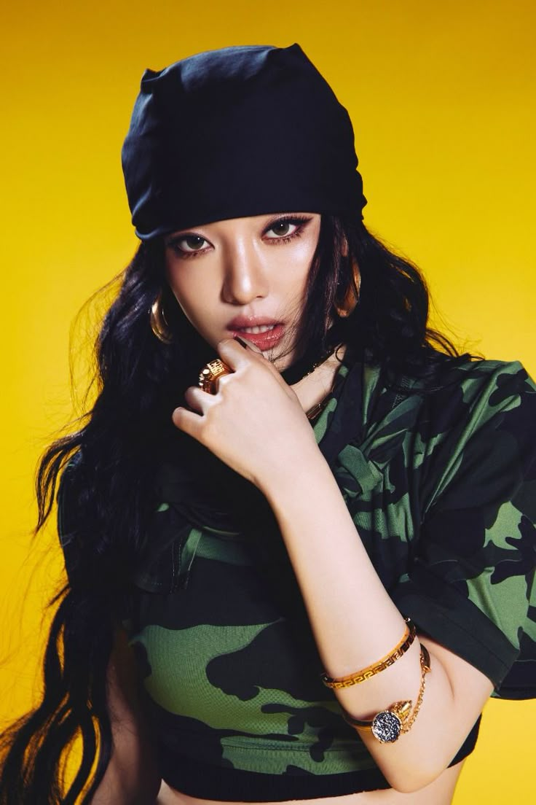
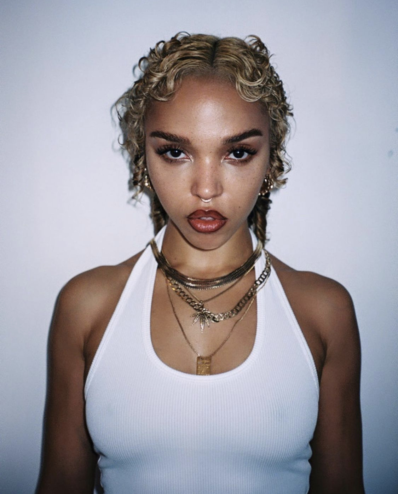

Artistas Gerenciados

Katy Perry
"A Letícia me ajudou a alcançar um novo patamar na minha carreira."

Taylor Swift
"A Letícia me ajudou a alcançar pontos ainda mais altos quando eu achei que já estivesse no pico como artista!"
Emilia
"Ser uma artista latina em um mercado global é desafiador, mas a Letícia sempre acreditou no meu potencial e abriu portas que eu jamais imaginei."
Olivia Rodrigo
"Ter alguém como a Letícia ao meu lado fez toda a diferença. Ela entende minhas necessidades como artista jovem e me guia com sabedoria.

Charli XCX
"A Letícia foi essencial pra que eu levasse o Club Classics a um novo patamar. Ela entende o que é arriscar, e isso me deu liberdade pra ser ainda mais ousada."

NingNing (aespa)
"Ela nunca tentou me encaixar em moldes. Sempre que precisei de direção, ela trouxe uma solução clara, sem apagar minha essência. Isso é raro."
Lily-Rose Depp
"Trabalhar com a Letícia me fez entender que ser artista também é ser estrategista — mas com estilo e personalidade. Me sinto mais no controle da minha imagem do que nunca."

FKA twigs
"A Letícia me protegeu das distrações e me ajudou a focar naquilo que é verdade pra mim. O espaço criativo que ela proporciona é como um templo."